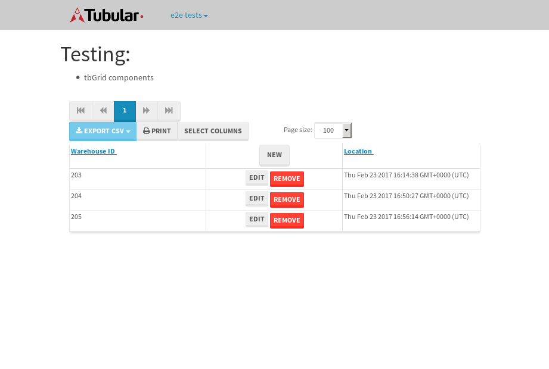

tbColumn.Grid Sorting - 28.408sTests: 5Skipped: 0Failures: 0 should sort data in ascending order then on descending order when sorting by Order Id column - 5.219sTests passed: 100.00%should order data in ascending order when click-sorting an unsorted text column - 4.865sTests passed: 100.00%should order data in descending order when click-sorting an ascending-sorted text column - 5.471sTests passed: 100.00%should order data in ascending order when click-sorting an unsorted date column - 6.271sTests passed: 100.00%should order data in descending order when click-sorting twice an unsorted date column - 6.581sTests passed: 100.00%
tbEmptyForm - 3.506sTests: 3Skipped: 0Failures: 0 should have an empty required field - 0.901sTests passed: 100.00%should not be able to click on save - 0.568sTests passed: 100.00%should load default value for numeric field - 0.485sTests passed: 100.00%
Tubular Filters.tbColumnFilter - 112.234sTests: 12Skipped: 0Failures: 0 should cancel filtering when clicking outside filter-popover - 8.85sTests passed: 100.00%should disable Value text-input for "None" filter - 6.909sTests passed: 100.00%should disable apply button for "None" filter - 7.222sTests passed: 100.00%should decorate popover button when showing data is being filtered for its column - 12.166sTests passed: 100.00%should correctly filter data for the "Equals" filtering option - 9.011sTests passed: 100.00%should correctly filter data for the "Not Equals" filtering option - 9.306sTests passed: 100.00%should correctly filter data for the "Contains" filtering option - 9.241sTests passed: 100.00%should correctly filter data for the "Not Contains" filtering option - 8.738sTests passed: 100.00%should correctly filter data for the "Starts With" filtering option - 7.526sTests passed: 100.00%should correctly filter data for the "Not Starts With" filtering option - 7.336sTests passed: 100.00%should correctly filter data for the "Ends With" filtering option - 7.296sTests passed: 100.00%should correctly filter data for the "Not Ends With" filtering option - 7.255sTests passed: 100.00%
Tubular Filters.tbColumnDateTimeFilter - 136.221sTests: 12Skipped: 0Failures: 0 should cancel filtering when clicking outside filter-popover - 7.323sTests passed: 100.00%should disable Value text-input for "None" filter - 6.832sTests passed: 100.00%should disable apply button for "None" filter - 6.775sTests passed: 100.00%should clear filtering when clicking on Clean button - 17.968sTests passed: 100.00%should decorate popover button when showing data is being filtered for its column - 11.582sTests passed: 100.00%should correctly filter data for the "Equals" filtering option - 6.849sTests passed: 100.00%should correctly filter data for the "Not Equals" filtering option - 8.344sTests passed: 100.00%should correctly filter data for the "Between" filtering option - 11.842sTests passed: 100.00%should correctly filter data for the "Greater-or-equal" filtering option - 11.832sTests passed: 100.00%should corretlly filter data for the "Greater" filtering option - 11.749sTests passed: 100.00%should correctly filter data for the "Less-or-equal" filtering option - 11.878sTests passed: 100.00%should correctly filter data for the "Less" filtering option - 12.388sTests passed: 100.00%
Tubular Filters.tbColumnOptionsFilter - 79.951sTests: 3Skipped: 0Failures: 0 should cancel filtering when clicking outside filter-popover - 8.169sTests passed: 100.00%should decorate popover button when showing data is being filtered for its column - 11.799sTests passed: 100.00%should filter column-elements in accordance to the selected filter when selecting a single option - 48.94sTests passed: 100.00%
Tubular Filters.tbTextSearch - 48.757sTests: 5Skipped: 0Failures: 0 min-chars is not set - 1.073sTests passed: 100.00%should filter data in searchable-column customer name to matching inputted text, starting from 3 characters - 6.758sTests passed: 100.00%should filter data in searchable-column shipper city to matching inputted text, starting from 3 characters - 12.075sTests passed: 100.00%should show clear button when there is inputted text only - 6.807sTests passed: 100.00%should clear filtering when clicking clear button - 16.499sTests passed: 100.00%
tbForm related components.tbCheckboxField - 6.079sTests: 2Skipped: 0Failures: 0 should save changes on "SAVE" - 2.886sTests passed: 100.00%should discard changes on "CANCEL" - 1.818sTests passed: 100.00%
tbForm related components.tbDropDownEditor - 11.562sTests: 5Skipped: 0Failures: 0 should set initial input value to the value of "value" attribute when defined - 1.727sTests passed: 100.00%should show the component name value in a label field when "showLabel" attribute is true - 2.002sTests passed: 100.00%should show a help field equal to this attribute, is present - 2.191sTests passed: 100.00%should submit modifications to item/server when clicking form "Save" - 2.605sTests passed: 100.00%should NOT submit modifications to item/server when clicking form "Cancel" - 2.543sTests passed: 100.00%
tbForm related components.tbTextArea - 15.465sTests: 7Skipped: 0Failures: 0 should set initial input value to the value of "value" attribute when defined - 1.619sTests passed: 100.00%should be invalidated when the number of chars is not in the range of "min" and "max" attributes - 2.05sTests passed: 100.00%should show the component name value in a label field when "showLabel" attribute is true - 1.758sTests passed: 100.00%should show a help field equal to this attribute, is present - 1.882sTests passed: 100.00%should require the field when the attribute "required" is true - 1.967sTests passed: 100.00%should submit modifications to item/server when clicking form "Save" - 2.91sTests passed: 100.00%should NOT submit modifications to item/server when clicking form "Cancel" - 2.338sTests passed: 100.00%
tbForm related components.tbDateEditor - 14.614sTests: 6Skipped: 0Failures: 0 should set initial date value to the value of "value" attribute when defined - 1.738sTests passed: 100.00%should be invalidated when the date is not in the range of "min" and "max" attributes - 2.078sTests passed: 100.00%should show the component name value in a label field when "showLabel" attribute is true - 1.626sTests passed: 100.00%should show a help field equal to this attribute, is present - 2.273sTests passed: 100.00%should submit modifications to item/server when clicking form "Save" - 2.711sTests passed: 100.00%should NOT submit modifications to item/server when clicking form "Cancel" - 2.907sTests passed: 100.00%
tbForm related components.tbTypeaheadEditor - 16.172sTests: 7Skipped: 0Failures: 0 should show an options list when there is an API-info/component entered-data - 1.919sTests passed: 100.00%should select the option clicked - 2.324sTests passed: 100.00%should show a "delete" button when an option/match is selected, and delete the option if button is clicked - 2.116sTests passed: 100.00%should show a label value equal to the component name when "showLabel" attribue is true - 1.807sTests passed: 100.00%should require a value when "require" attribute is true - 2.052sTests passed: 100.00%should submit modifications to item/server when clicking form "Save" - 2.772sTests passed: 100.00%should NOT submit modifications to item/server when clicking form "Cancel" - 2.614sTests passed: 100.00%
tbForm related components.tbSimpleEditor - 18.845sTests: 9Skipped: 0Failures: 0 should set initial input value to the value of "value" attribute when defined - 1.638sTests passed: 100.00%should be invalidated when the number of chars is not in the range of "min" and "max" attributes - 2.105sTests passed: 100.00%should show the component name value in a label field when "showLabel" attribute is true - 1.563sTests passed: 100.00%should set input placeholder to the value of "placeholder" attribute - 1.638sTests passed: 100.00%should validate the control using the "regex" attribute, if present - 2.135sTests passed: 100.00%should show a help field equal to this attribute, is present - 2.445sTests passed: 100.00%should require the field when the attribute "required" is true - 1.695sTests passed: 100.00%should submit modifications to item/server when clicking form "Save" - 3.162sTests passed: 100.00%should NOT submit modifications to item/server when clicking form "Cancel" - 1.851sTests passed: 100.00%
tbForm related components.tbNumericEditor - 15.094sTests: 7Skipped: 0Failures: 0 should set initial component value to the value of "value" attribute when defined - 1.533sTests passed: 100.00%should be invalidated when the entered number is not in the range of "min" and "max" attributes - 2.8sTests passed: 100.00%should show the component name value in a label field when "showLabel" attribute is true - 1.793sTests passed: 100.00%should show a help field equal to this attribute, is present - 1.588sTests passed: 100.00%should require the field when the attribute "required" is true - 1.86sTests passed: 100.00%should submit modifications to item/server when clicking form "Save" - 3.039sTests passed: 100.00%should NOT submit modifications to item/server when clicking form "Cancel" - 1.933sTests passed: 100.00%
tbForm Connection Error NoModelKey - 2.689sTests: 1Skipped: 0Failures: 0 tbForm connection error functionality - 0.551sTests passed: 100.00%
tbForm Connection Error NoServerUrl - 2.448sTests: 1Skipped: 0Failures: 0 tbForm connection error functionality - 0.454sTests passed: 100.00%
tbGridComponents - 8.323sTests: 6Skipped: 0Failures: 1 should add item with newRow method - 2.103sTests passed: 100.00%should add item with newRow method and cancel action - 0.797sTests passed: 100.00%should update item with tbSaveButton - 0.81sFailed: ElementNotVisibleError✗Tests passed: 0.00%should NOT update item on cancel Update action - 1.079sTests passed: 100.00%should remove item with tbRemoveButton - 1.119sTests passed: 100.00%should NOT remove item on cancel Remove action - 0.943sTests passed: 100.00%
tbGridPager.navigation buttons - 9.427sTests: 1Skipped: 0Failures: 0 should perform no action when clicking on the numbered navigation button corresponding to the current-showing results page - 1.316sTests passed: 100.00%
tbGridPager.navigation buttons.first/non-last results page related functionallity - 4.208sTests: 2Skipped: 0Failures: 0 should disable "first" and "previous" navigation buttons when in first results page - 1.637sTests passed: 100.00%should enable "last" and "next" navigation buttons when in a results page other than last - 2.571sTests passed: 100.00%
tbGridPager.navigation buttons.last/non-first results page related functionallity - 3.903sTests: 2Skipped: 0Failures: 0 should disable "last" and "next" navigation buttons when in last results page - 1.957sTests passed: 100.00%should enable "first" and "previous" navigation buttons when in a results page other than first - 1.946sTests passed: 100.00%
tbGridPager.page navigation - 7.805sTests: 5Skipped: 0Failures: 0 should go to next results page when clicking on next navigation button - 1.543sTests passed: 100.00%should go to previous results page when clicking on previous navigation button - 1.931sTests passed: 100.00%should go to last results page when clicking on last navigation button - 1.634sTests passed: 100.00%should go to first results page when clicking on first navigation button - 1.467sTests passed: 100.00%should go to corresponding results page when clicking on a numbered navigation button - 1.229sTests passed: 100.00%
tbGridPagerInfo - 4.746sTests: 2Skipped: 0Failures: 0 should show text in accordance to numbered of filter rows and current results-page - 1.656sTests passed: 100.00%should show count in footer - 0.472sTests passed: 100.00%
tbPageSizeSelctor - 10.44sTests: 4Skipped: 0Failures: 0 should filter up to 10 data rows per page when selecting a page size of "10" - 2.206sTests passed: 100.00%should filter up to 20 data rows per page when selecting a page size of "20" - 1.791sTests passed: 100.00%should filter up to 50 data rows per page when selecting a page size of "50" - 2.852sTests passed: 100.00%should filter up to 100 data rows per page when selecting a page size of "100" - 2.131sTests passed: 100.00%
tbRowSelectable - 9.122sTests: 2Skipped: 0Failures: 0 selected rows - 4.798sTests passed: 100.00%unselected rows - 2.786sTests passed: 100.00%
tbSingleForm - 18.803sTests: 8Skipped: 1Failures: 0 should load correct info - 0.001s***Skipped***Tests passed: 0%should change customer name - 3.638sTests passed: 100.00%should save it - 2.844sTests passed: 100.00%should clear the inputs - 2.69sTests passed: 100.00%should update - 2.474sTests passed: 100.00%should reset editor - 2.384sTests passed: 100.00%should not save if not Changes - 2.5sTests passed: 100.00%should not be able to click on save - 2.272sTests passed: 100.00%
{kind=link}